自由都是要付出代价的
情境：父亲独居多年，如今搬回家照顾病倒的母亲。
遇到这种情况，可以这样做
- 自由不是免费的，账单总有一天会由家人代收。
- 以为「我一直在」就够了的陪伴，是缺席的另一种形式。
- 有些回家，晚到也比不到好。

Drama Recap · 剧情图文总结
第 28 集 · 取而代之
孤烟正式向茞星提出解约、投奔顶麒网，住进了何韩住过的那间酒店套房——赵兰心告诉他：你已经彻底取代何韩了；另一边，周媚的母亲知道了她和贝律师的事，一场压抑几十年的母女大战在深夜爆发；展翘独自面对宫颈囊肿的手术风险，医生说影响自然受孕；范叔说，他在茞星安了内应。
茞星的牌桌，一夜之间塌了一半。孤烟解约，顶麒网给他安排的是何韩住过的房间——窗外正对展翘的公司，赵兰心说：「让你住进来，就是告诉你，你已经彻底取代他了。」而展翘此刻躺在手术台上，手机里是张佑森托掌珠送来的花。这座城市每天都在换人坐庄，只有她自己知道，有些代价，正在一点点变成她的。
第 28 集，一场盛大的「取代」，与两场迟到的和解。 孤烟的代理律师把解约函递到展翘面前。展翘当面问他：「我们之间的关系，就是钱的关系吗？」孤烟答：「大部分是钱的关系。可我要的，是哪怕结婚当天也在关心我生活的重视。」
剧里的鸡毛蒜皮，往往是人生的缩影。这些情节不只是故事——当你在现实中遇到同样的处境时，它们能提醒你：先做什么、别做什么、怎么说才有效。
情境：父亲独居多年，如今搬回家照顾病倒的母亲。
情境：周媚把母亲几十年压在她身上的控制悉数还回去，母女两败俱伤。
情境：周媚在深夜的酒里宣布「我终于做回了我自己」。
情境：孤烟宁可解约赔钱也要去赵兰心那里，因为「她哪怕结婚当天都在关心我的生活」。
情境：展翘说「我就恳求他」，被凌奕凯拦住：「你都不应该说出'恳求'这两个字。」
情境：顶麒网用「你已经取代何韩」给孤烟画饼，教他永不退让。
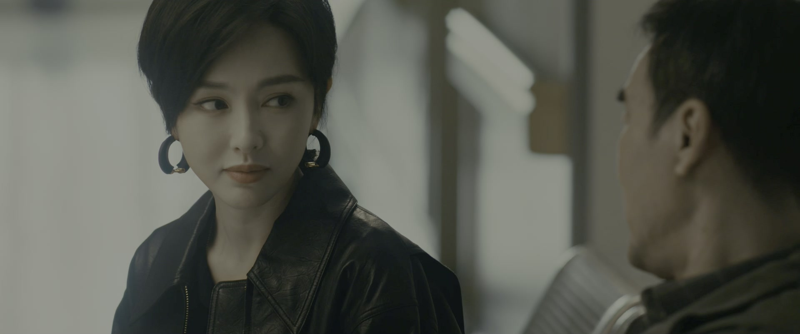
母亲病倒了。多年没怎么同住的父亲搬了回来，守在床边。女儿问他：「你陪我妈待了这么久，都在聊些什么？」父亲答：「一些过去的事情，几个老朋友最近联系了我一下。」
父亲说，以前虽然不住在一起，可他一直在——「我习惯自己待着，可我一直在。她知道上哪儿能找着我，也知道有事随时可以叫我帮忙。」如今母亲病重，他决定离她近一点。女儿这才知道，父亲从没嫌弃过母亲。「我跟你妈结婚，这辈子再没想过还有其他可能。」
关键台词 · KEY QUOTES
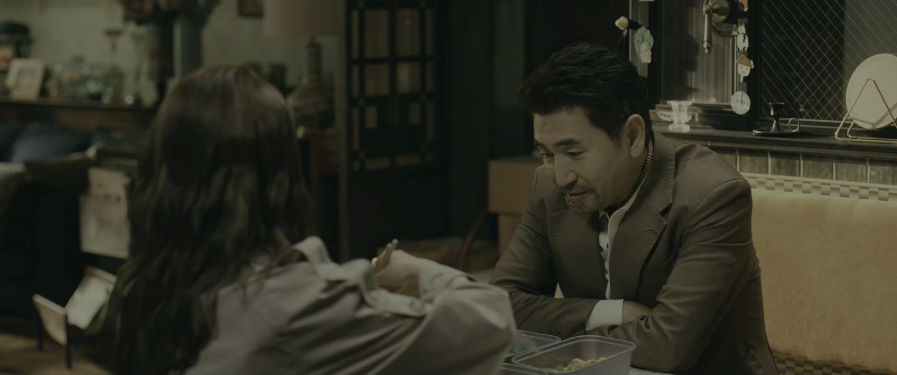
蔡德璋不请自来，开口就说「茞星出了点问题吧」。有人惊讶：你个搞装修的，怎么知道的？他答：「你在这个公司，我得关注你一下。而且林展翘，也是我需要关心的人。」
他此行是来投钱的：「力所能及的，就是能投点钱。」掌珠直说老板不会要。蔡德璋却坚持：「他要不要是他的事，但咱们是不是应该有咱们的态度。就算他不要，也得让他知道，在这个世界上，还有人愿意帮他、支持他。」
关键台词 · KEY QUOTES
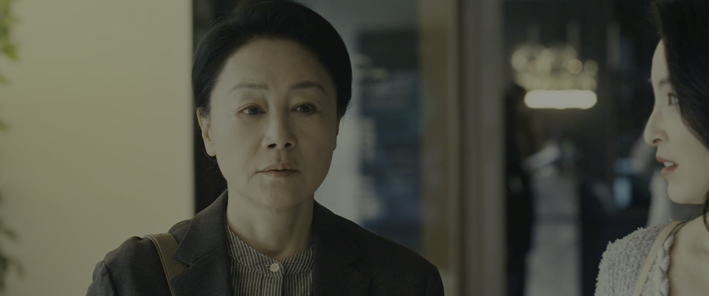
周媚的同事把她的东西送到家里，还陪着她的母亲多说了一会儿话。「阿姨，周媚是不是快有好消息了？她跟贝律师啊——周媚熬了那么久，太不容易了。」
消息传进母亲的耳朵。夜里，母亲在电话里盘问周媚：「贝律师，就是上次跟你一起来找我的那个男人吗？你跟他到底是什么关系？你晚上回来，我在你的地方等你。」
关键台词 · KEY QUOTES
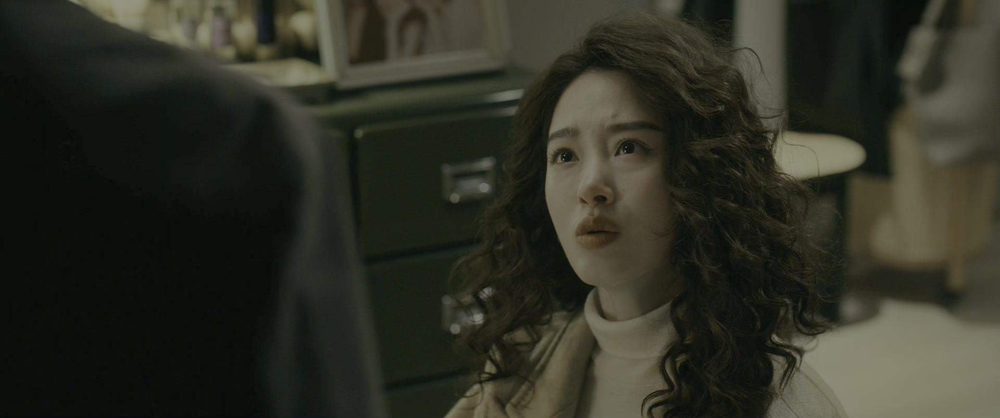
周媚和母亲爆发了这些年最大的一场争吵。母亲骂她：「你知道你刚才说了天底下最不要脸的话吗？」周媚翻出几十年的旧账：「当年你去找我爸和他外面的女人的时候，你是带着我一起去的。你为什么要带我去？我是能帮你打架，还是能帮你把我爸抢回来？」
母亲说，她只想让女儿知道世上最窝囊的事、最不要脸的人，将来别找这样的男人、别成为这样的女人。周媚却看得更透：「你不敢打那个女人，你架着我的头，看着他们两个。我懂什么？我也是受害者。你几十年把愤怒和胆小全压在我身上——因为你这样就算赢了吗？你没有。」
周媚一句句还击：「这个家，我就是用来对付你的。」「我穿这些老土的衣服、扮演你乖巧的女儿的时候，我很痛苦。」「我是赢家。你对我的控制里，我赢了。你当年输了，不是吗？」母亲甩出最后一句：「我没有你这个女儿。」周媚答：「那你就什么都没有了。」
关键台词 · KEY QUOTES
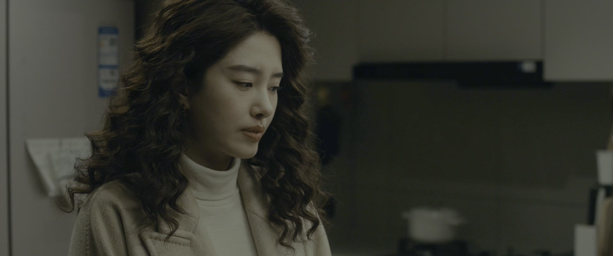
深夜，周媚回到展翘家，三个人开了一瓶十年陈酿。周媚说，她最紧张的不是别的，是「在跟他说之前」——可真正面对贝律师、看到他难过的样子，她反而不紧张了。「我终于等到这一天，做回了我自己。」
展翘被她反将一军：「你什么时候把何韩拉过来，告诉他你喜欢他？只要你说出口，不管他怎么对你，那就是你做回了你自己。」展翘说喜欢有什么用、能当饭吃吗。周媚戳穿她：「你是害怕，怕自己像你妈那样，投入一辈子喜欢一个人，结果还被推得很远。」
展翘沉默片刻：「我不会跟我妈一样。她太苦了，几十年，结婚了，我都已经长这么大了，她到现在都没有走进我爸。我要是喜欢一个人，我一定要跟她在一起，很近，很近。」
关键台词 · KEY QUOTES
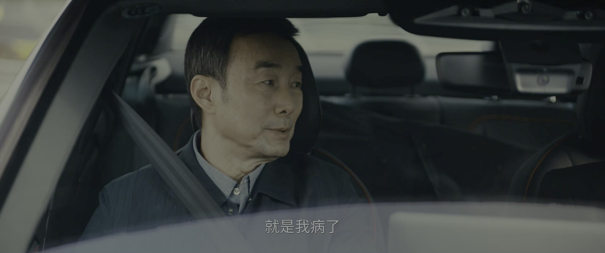
父亲退了自己住了十几二十年的房子，正式搬回家。有人说佩服他「说到做到」。父亲答：「自由都是要付出代价的，不是你自己付出代价，就是别人为你付出代价。」
话题落到展翘身上：「她也是付出代价的——一对不能正常相处的父母，孩子怎么会不付代价？人有样学样，没学着好的，就学了一身毛病。」妈妈替女儿撑腰：「是他有问题，我女儿我还不知道？」
关键台词 · KEY QUOTES
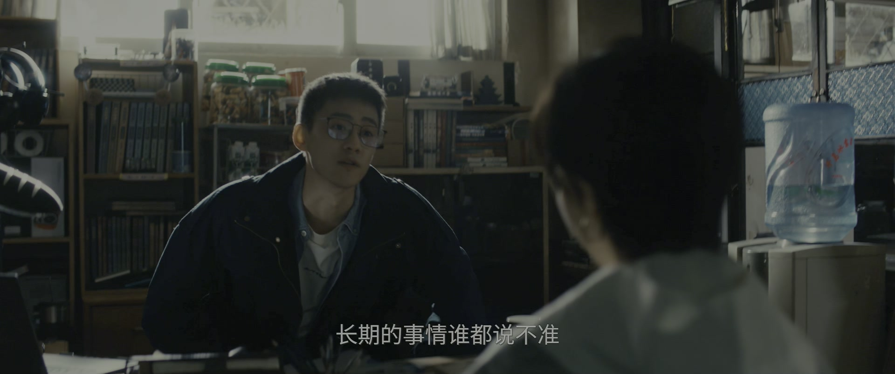
孤烟的代理律师登门，递上解约协议：「王海先生是茞星的签约作者。据我们了解，在你们合作期间，茞星产生了种种违约行为。」展翘没有看协议，只看着赶来的孤烟：「但在这个时候，你给我谈解约，我感到心寒。」
孤烟把自己的委屈全倒出来：「我在网吧当网管的时候，从没想过有一天会跟你一起写小说。我开始写小说了，也没想到能这么快升到作者榜首。但我更没想到的是——我还是得不到我想要的重视。」「赵兰心哪怕在结婚当天，都在关心我的生活。只要我需要她，她随时都会来找我。」
展翘承认：「如果你要的是这些，很抱歉，我确实给不了你。」她最后问了一句：律师问的合作细节，是你告诉顶麒网的吗？孤烟否认。展翘点破：「范叔说了，他在茞星安了内应。」孤烟愣住，只说：「关于解约，交给两边的律师去处理。《逝有故人醉》我会好好写完的。好好写完，对你对我都有好处。」
关键台词 · KEY QUOTES
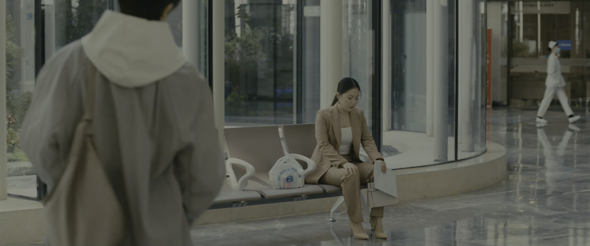
展翘独自在医院面对宫颈囊肿的手术谈话。医生把风险说在前面：「囊肿比较大，切除之后发生伤口狭窄粘连，影响自然受孕的风险还是有的。」她听完，神色平静。
张佑森的电话打过来，他怕她不高兴，早让掌珠给她带了花，又讲起自己新接的房子项目：「看个房子，会让你心情好点，也能让你感受到，新的生活在向你招手。」展翘笑着说，要是茞星真做不下去了，她就去跟他卖房子，天天看房、天天畅想新生活。
病区里人来人往。有人认出她，看她脸色不好要送她回去，她说不用管她、坐一会儿就好。一个人，一台手术，一束花——她照单全收。
关键台词 · KEY QUOTES
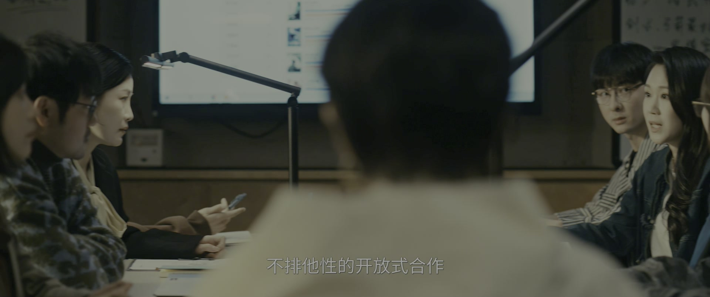
顶麒网的人找上孤烟，把账算得明明白白：「林展翘之前弄丢了何韩，茞星陷入危机，靠你孤烟救了回来。现在她又把你弄丢了，不会再有人救她了。」「他现在所有的低姿态，都是为了暂时度过眼下的难关而表演出来的。本质上，他还是那个高高在上的林展翘。你只有不妥协、不退让，才能在他的关系里永居高位。」
茞星那边，咨询公司给出结论：孤烟进入快速成熟期，无论如何都要保住和他的合作——哪怕同意他不排他性的开放式合作，让他和顶麒网一起做项目。凌奕凯第一个炸了：「我们辛辛苦苦培养一个作者出来，现在还要跟别人共用？你这是欺辱我。」
展翘站起来：「我再去找他一次。」「那他如果不同意呢？」「我就恳求他，请他帮帮忙，就算是为了茞星。」凌奕凯拦她：「老板，再怎么样，你都不应该说出'恳求'这两个字。」
关键台词 · KEY QUOTES
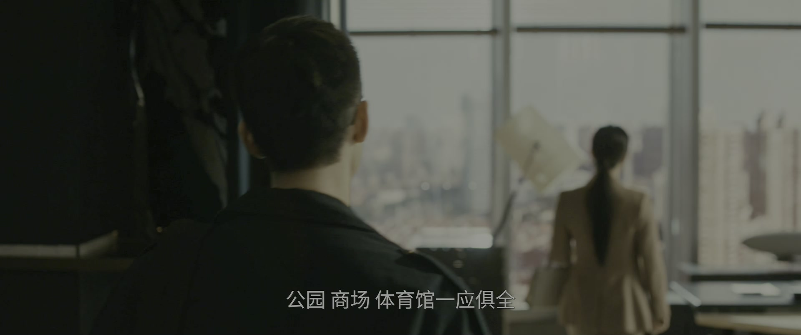
赵兰心带孤烟来看房——不是别处，正是何韩住过的那家酒店。「你帮我租的房子，就在这儿。」经理引路：这是酒店最好的房间，三百多平，恒温恒湿，窗外是最繁华的城市景观，最适合写作。
孤烟说不想住这儿。赵兰心把话挑明：「会想到何韩，说明你还在意他这个人。我让你住进来，就是告诉你，你已经彻底取代他了。等这里越来越像你的地方，等你躺在那张床上再也不会想起他，那你以后面对林展翘还是何韩，都会觉得自己值得最好的待遇、最多的尊重。」
「还有——这个窗户的对面，就是林展翘的公司。」孤烟望着窗外，只回了一句：「没关系。」
关键台词 · KEY QUOTES
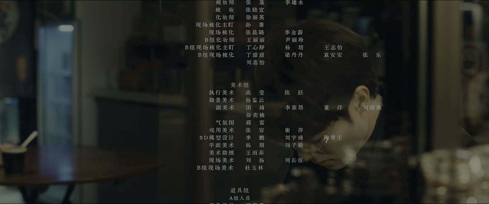
夜色里，展翘的独白落下来：「我一直在想，每一个人对于最舒适的亲密距离，应该是不一样的。我们不动摇，就不会失散在拥挤人潮。」
片尾曲响起，闪回里，何韩对展翘说「我希望能跟你一直在一起」，展翘说「我想让你有那么一下下的空想」。曾经写进歌里的誓言，此刻飘在城市上空。
关键台词 · KEY QUOTES
面对孤烟解约当面质问「我们的关系就是钱的关系吗」；独自接受宫颈囊肿手术，听完「影响自然受孕」的风险神色平静；决定「再去找他一次，就恳求他」。
把委屈全倒出来——「我还是得不到我想要的重视」；否认向顶麒网泄露合作细节，得知茞星有内应时愣住；答应好好写完《逝有故人醉》；住进何韩的旧套房。
与母亲爆发压抑几十年的摊牌，一句句还击「我是赢家」；深夜开十年陈酿宣布「做回了我自己」，又激将展翘去跟何韩表白。
从同事嘴里听说女儿和贝律师的事，夜里盘问、怒骂；当年架着女儿的头去看出轨的场面，成了母女间结了几十年的痂；甩出「我没有你这个女儿」。
在咨询会上第一个炸了——「现在还要跟别人共用作者？你这是欺辱我」；又拦住展翘，「你都不应该说出'恳求'这两个字」。
为孤烟租下何韩住过的那间酒店套房，亲口告诉他「你已经彻底取代他了」，并点破窗外就是展翘的公司。
给住院的展翘送花，陪她聊天；对爸爸蔡德璋送钱来救茞星，只说了句「老板不会要的」。
「你不敢打那个女人，你架着我的头，看着他们两个。」「我是赢家。你当年输了，不是吗？」周媚把几十年的委屈一次还清。
「我终于做回了我自己」，和「你什么时候把何韩拉过来，告诉他你喜欢他」——两个女人在酒里互相拆台又互相撑腰。
「我还是得不到我想要的重视」，与展翘那句「我确实给不了你」——一段合作以「心寒」收场。
「让你住进来，就是告诉你，你已经彻底取代他了。」窗外，正对展翘的公司。
医生提醒影响自然受孕的风险，张佑森的花和「看个房子心情会好点」——展翘照单全收。
父亲搬回家照顾病妻，一句话道尽两代人的账。
孤烟住进何韩的套房，窗外就是展翘的公司——「取代何韩」的第一步，从睡他的床开始。
范叔在茞星安了人，合作细节一清二楚——内应是谁？凌奕凯？还是别人？
影响自然受孕的风险，和她那句「我要是喜欢一个人，一定要离她很近」——两条线会在哪里交汇？
茞星被逼到同意孤烟不排他合作，棋局还没下完，孤烟手里的《逝有故人醉》续写权就是下一张牌。
父亲搬回家，「自由」的代价由一家人分付——这笔账，才刚开始算。